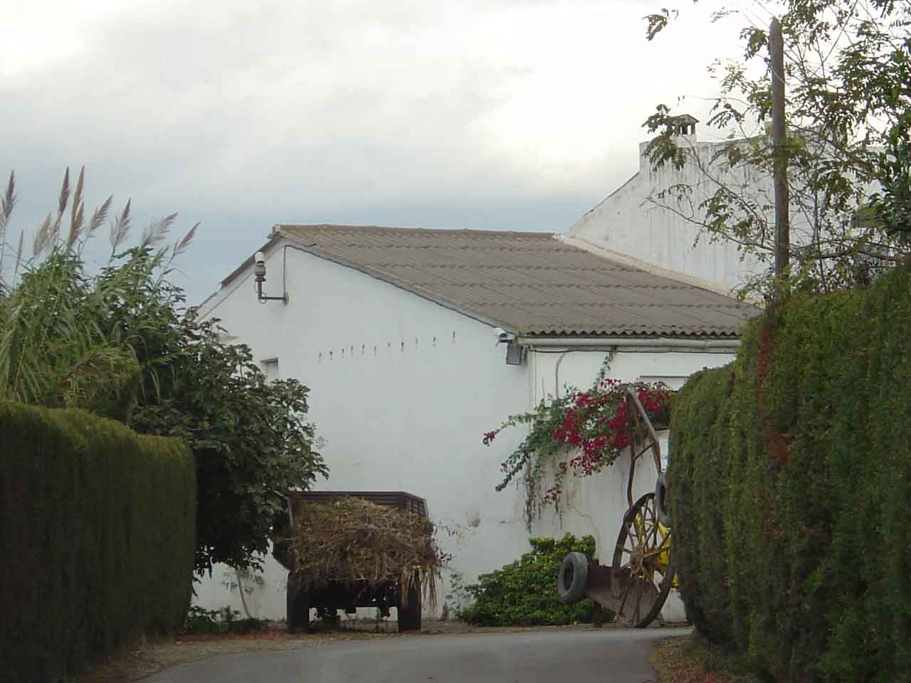
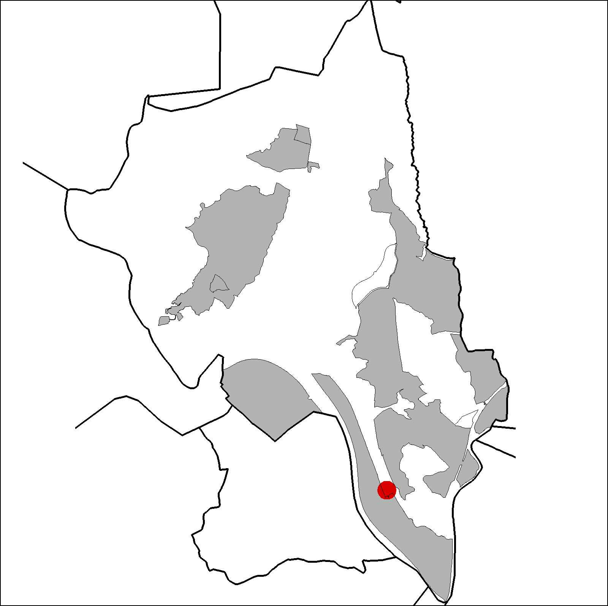

|  |  |
Nom de l’element: Can Cases del Riu
Clau d’identificació: B.1.05
Nucli o indret: Pol. Ind. Sant Vicenç.
UTM:X= 415.149, Y= 4.589.745, 55 m s.n.m.
Règim del sòl: Sòl no urbanitzable.
1.1. Època de construcció i tipologia:
Casa pairal edificada al 1758 i renovada al 1858. Presenta uns murs de mamposteria i la coberta és de fusta i teula a dues aigües. Formada per una planta rectangular amb planta baixa i planta primera. Són característics els arcs oberts a les golfes i la simetria en la seva composició. Antigament, posseïa una explotació agrícola i vitivinícola. En aquest context, encara presenta una premsa de l’any 1741, la qual, al 1847 va ser substituïda la rosca de fusta de la premsa per una de ferro. Al 1992 es va resturar el paviment del garatge. Els cossos de la masia són: el cos principal de la vivenda (planta baixa, planta pis i sotacoberta), un cos annex en angle recte (planta baixa i planta primera), el garatge, l’antic celler, l’antiga era, un magatzem adjunt, la zona d’esports i l’antic safareig.
1.2. Estat de conservació:
Molt bo, tots els elements de la casa presenten un bon estat de conservació.
1.3. Ús actual:
Habitatge amb horts.
1.4. Accés:
Accés difícil per la carretera B-225, agafant el trecall cap al carrer Metal·lúrgia, en direcció al polígon Industrial Can Cases del Riu.
Recreatiu de restauració (restaurant del P.I. Sant Vicenç), unihabitatge.
3.1. Usos admesos:
Habitatge rural (màxim 3 habitatges); residencial; hoteler (excepte aparthotel; i amb un màxim de 30 places); oficines i serveis; industria vinculada a productes del camp (industrial, categoria 1ª); educatiu; recreatiu cultural i social; recreatiu de restauració; esportiu.
3.2. Condicions d’ordenació:
Segons Pla Especial a redactar.
3.3. Accés i serveis:
Accés difícil per la carretera B-225, agafant el trecall cap al carrer Metal·lúrgia, en direcció al polígon Industrial Can Cases del Riu.
BCIL (Bé Cultural d’Interes Local)